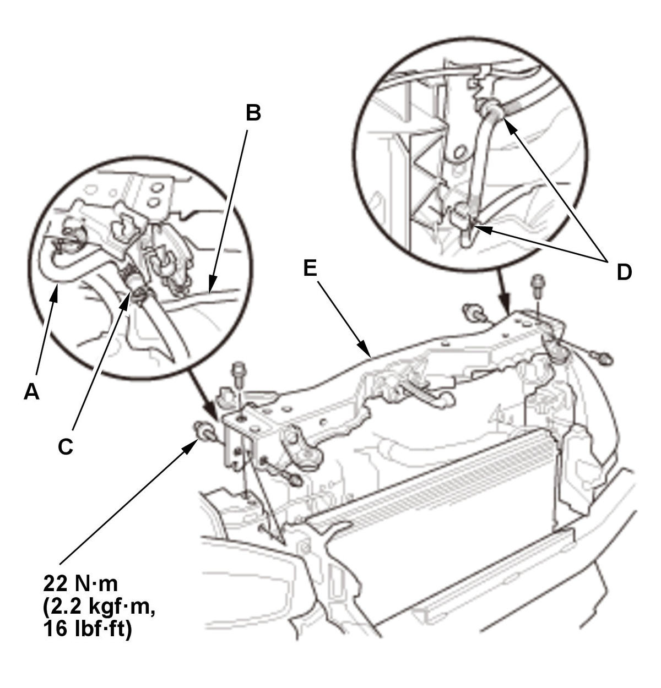

Removal and Installation
- Air Cleaner - Remove
- Front Grille Cover - Remove
- Front Bumper - Remove
- Front Bumper Upper Beam - Remove
- Bulkhead - Move

Courtesy of HONDA, U.S.A., INC.1. Disconnect the water bypass hose (A). 2. Remove the receiver line (B), the hose joint (C), and the harness clamps (D).
3. Move the bulkhead (E).
- Fan Shroud Assembly - Remove
1. Disconnect the connectors (A) and the water bypass hose (B).
2. Remove the harness clamps (C).
3. Remove the expansion tank outlet pipe (D).
4. Remove the fan shroud assembly. - Fan Shroud Assembly - Disassemble
- All Removed Parts - Install
1. Install the parts in the reverse order of removal.